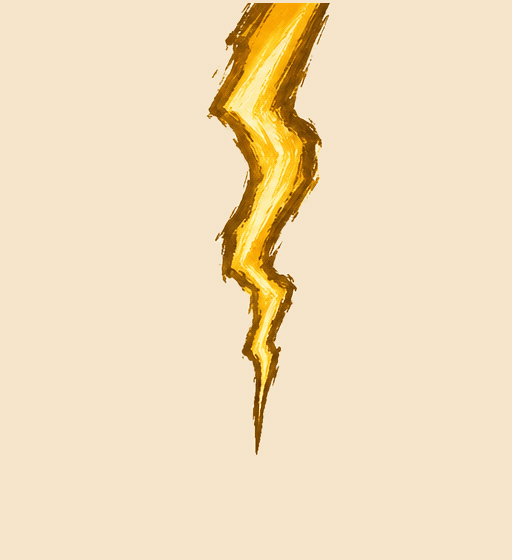

<!doctype html><html lang="zh-CN"><meta charset="utf-8"><meta name="viewport" content="width=device-width,initial-scale=1"><title>黄色粗落雷 · GIF 试播</title><style>
@font-face{font-family:Jianghu;src:url(../jianghu.ttf)}*{box-sizing:border-box}body{margin:0;background:#eee2c9;color:#43321b;font:15px/1.7 "Microsoft YaHei",sans-serif}main{max-width:1040px;margin:auto;padding:32px}h1{font:39px Jianghu,serif;margin:0 0 12px}h2{font:27px Jianghu,serif;margin:0 0 15px}p{color:#796545}section{display:grid;grid-template-columns:512px 1fr;gap:28px;align-items:start}.player{border:1px solid #c7b492;border-radius:12px;overflow:hidden;background:#f5e5ca}.player img{display:block;width:100%;height:auto}button,a{font:inherit}button{padding:7px 12px;background:#fff5dc;border:1px solid #baa376;border-radius:6px;cursor:pointer;margin:0 7px 9px 0;color:#594423}button.active{background:#425c4b;color:#fff4d8}.buttons{padding:12px 12px 3px;border-top:1px solid #c7b492}a{color:#49654f}.keyframes{display:grid;grid-template-columns:repeat(6,1fr);gap:8px;margin-top:24px}.keyframes img{width:100%;border:1px solid #c7b492;border-radius:7px}.detail{font-size:13px}.detail a{display:block;margin-top:8px}@media(max-width:850px){section{grid-template-columns:1fr}.player{max-width:512px}main{padding:22px}.keyframes{grid-template-columns:repeat(3,1fr)}}
</style><main><h1>黄色粗落雷 · 笔刷版</h1><p>深赭外缘、金黄主体、浅金亮芯。先看画风、力量感和消散节奏。</p><section><div class="player"><div class="buttons"><button class="active" data-speed="normal">正常速度</button><button data-speed="slow">慢速查看</button><button id="pause">定格峰值</button></div></div><aside><h2>六个关键形态</h2><p>下落 → 触地 → 爆发 → 收束 → 余电 → 消散</p><p>每次播放后留一小段空白，方便看清整次动作。粗主干保持稳定落点，亮暗由笔刷色层表现。</p><p>这是关键帧试播，后续还要细化过渡与游戏内尺寸。</p><div class="detail"><a href="yellow-thunder-normal.gif">打开正常速度 GIF</a><a href="yellow-thunder-slow.gif">打开慢速 GIF</a><a href="README.md">源稿与制作说明</a><a href="../index.html">返回原素材候选</a></div></aside></section><div class="keyframes" id="frames"></div></main><script>
const gif=document.getElementById('gif'),pause=document.getElementById('pause');let speed='normal',playing=true;function play(){playing=true;gif.src='yellow-thunder-'+speed+'.gif';pause.textContent='定格峰值'}document.querySelectorAll('[data-speed]').forEach(b=>b.onclick=()=>{speed=b.dataset.speed;document.querySelectorAll('[data-speed]').forEach(x=>x.classList.toggle('active',x===b));play()});pause.onclick=()=>{if(playing){playing=false;gif.src='frame-02.png';pause.textContent='继续播放'}else play()};document.getElementById('frames').innerHTML=Array.from({length:6},(_,i)=>``).join('');
</script></html>
